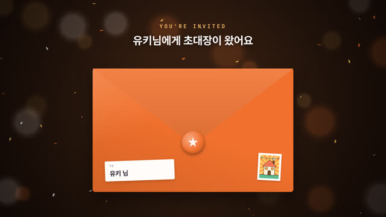
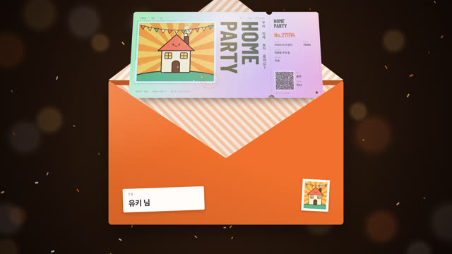
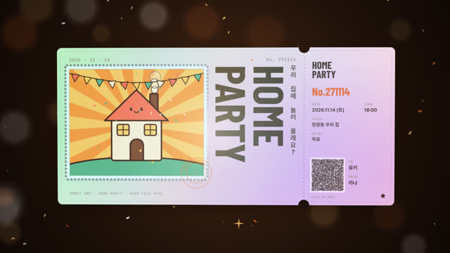
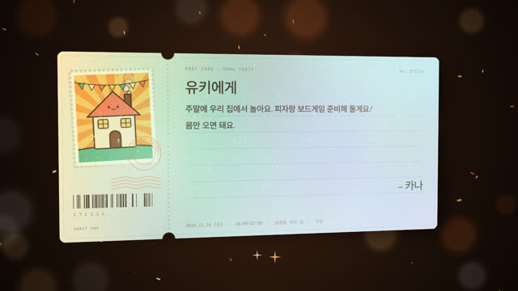
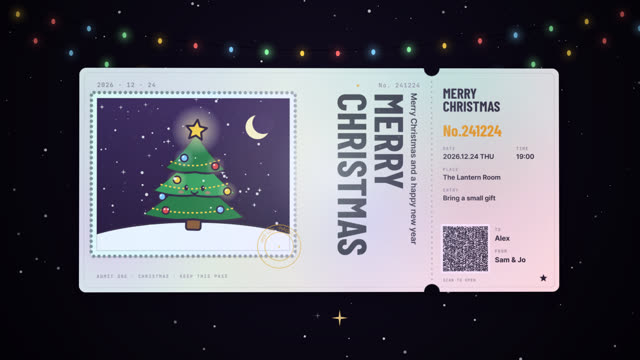
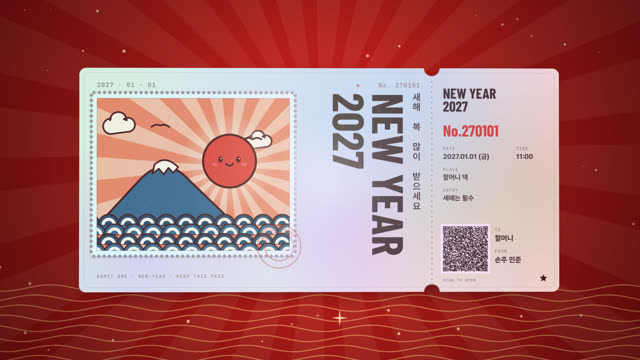
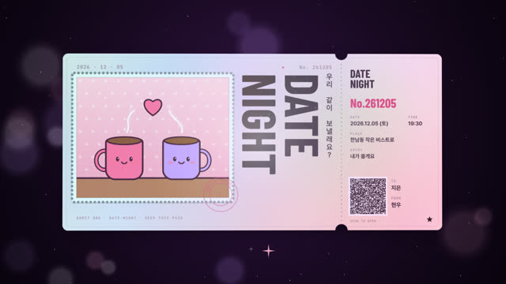
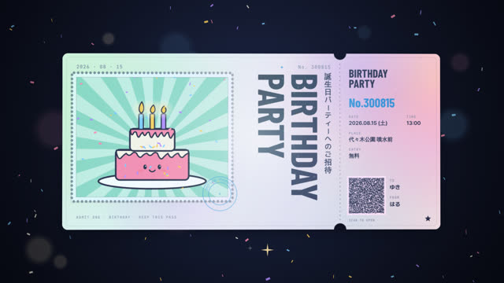
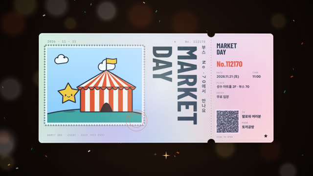

작업 흐름
- 입력
- 주제(졸업 저녁, 집들이, 북클럽 …)와 날짜 · 시간 · 장소 · 참가비, 받는 사람과 보내는 사람, 한두 줄 메시지, 손님의 언어, 답장 받을 곳
- 브리프
- 고정되는 스타일(티켓 · 포일 · 봉투 연출 · 그림의 말투)과 주제마다 새로 정하는 것(주인공 캐릭터와 그 순간의 동작, 색, 무대 배경, 음악, 문구)을 채운
BRIEF.md - 테마
new-theme.mjs로 만든 뼈대에 그린 주제의 그림(외곽선 하나, 깜빡이는 얼굴, 2–4초 반복 동작), 필요하면 새 무대 배경과 직접 작곡한 곡. 기본 테마 6종은 스타일의 예시- 확인
- 새 그림이 창을 채우고 움직이는지, 빈 프레임 · 결정성 · 링크 왕복 · QR 크기 · 캘린더 · 음악 검사, 브리프 검토 기준으로 채점하는 스틸
- 출력
- 정적 호스팅에 올리는
pass/(받는 페이지 · 만들기 페이지), 초대장 링크와 QR, 1080×1350 QR 공유 이미지, 음악을 넣은 14초 1080p MP4(16:9 · 9:16)
cd holo-pass
node scripts/check.mjs examples/graduation/invite.json
node scripts/render.mjs examples/graduation/invite.json --stills 1.3,3.3,6.5,10
node scripts/render.mjs examples/graduation/invite.json --size 1080x1920
node scripts/new-pass.mjs ~/my-party # pass/ + BRIEF.md + invite.json
cd ~/my-party && node <skill>/scripts/new-theme.mjs housewarming
node <skill>/scripts/link.mjs invite.json --base https://you.github.io/party/pass/요구 사항: Node + Playwright Chromium, ffmpeg(MP4만). 페이지는 정적 호스팅만 있으면 됩니다. 1080p 한 프레임이 약 0.15초, 14초 영상을 워커 4개로 약 4분. 단계별 순서는 SKILL.md에 있습니다.
샘플
주제에서 새로 설계한 졸업 초대장, 홈파티 초대장이 열리는 순서, 스타일의 예시인 기본 테마 다섯 가지입니다. 카드를 누르면 새 탭에서 그 초대장이 받는 사람 화면 그대로 열립니다(봉투 열기 → 기울이기 · 탭해서 뒤집기 → 참석 회신).
CLASS OF 2027 주제에서 새로 설계 · 한국어 · 14초
"졸업식 끝나고 저녁 먹는 초대장"이라는 주제에서 시작해, 기본 테마를 쓰지 않고 브리프를 쓴 뒤 그림 · 무대 배경 · 음악을 새로 만들었습니다. 학사모를 쓴 졸업장 캐릭터가 뛰고, 3초마다 학사모가 던져지며, 조명이 흔들리는 강당에 직접 작곡한 행진곡이 흐릅니다.
HOME PARTY 기본 테마 · 한국어 · 14초
유키에게 보내는 홈파티 초대장입니다. 봉투가 도착하고, 봉인이 튀고, 티켓이 날아와 기울고, 엽서 뒷면으로 뒤집힙니다.




기본 테마 스타일의 예시 · 5종 · 한국어 · 영어 · 일본어
스킬에 들어 있는 테마입니다. 주제가 정확히 맞을 때만 그대로 쓰고, 아니면 졸업 예제처럼 새로 설계합니다. 테마마다 그림, 배경, 색, 음악, 기본 문구(3개 언어)가 다릅니다.





실제 작품
이 레포에서 만든 스킬입니다. KANA(@KanaWorks_AI)가 X에 소개한 무료 움직이는 초대장 서비스 「しあわせパス」의 형식(홀로그램 티켓, 봉투에서 꺼내는 연출, 엽서 뒷면, 음악, 참석 회신과 캘린더, 링크 · QR 공유)이 출발점입니다. 코드는 처음부터 새로 썼고, 테마 · 캐릭터 · 음악 · 문구는 모두 이 레포의 것입니다. 원본의 그림, 마스코트, 이름은 쓰지 않았습니다. 졸업 예제는 이 스킬의 흐름(브리프 → 새 테마 → 검사 → 채점)으로 만든 첫 결과물입니다.
링크
- SKILL.md 워크플로
- 폴더 pass · scripts · examples(graduation 브리프 포함) · references
- README.md 빠른 시작
- references/BRIEF.md 주제 → 테마 브리프 틀, 스틸 검토 기준
- references/SOURCE.md 출발점이 된 게시물, 가져온 것과 가져오지 않은 것
- references/LOOK.md 티켓의 구조, 포일 레이어, 봉투, 14초 타임라인
- references/THEMES.md 주제의 테마 만들기: 그림 · 무대 배경 · 음악
- references/KIT.md 초대장 필드, 페이지 계약, API
- references/LESSONS.md 겪은 문제와 해결